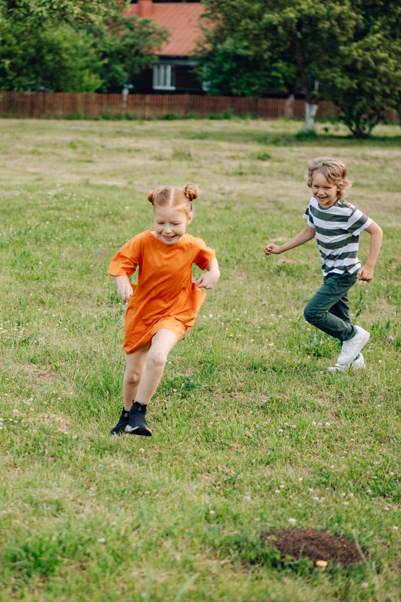
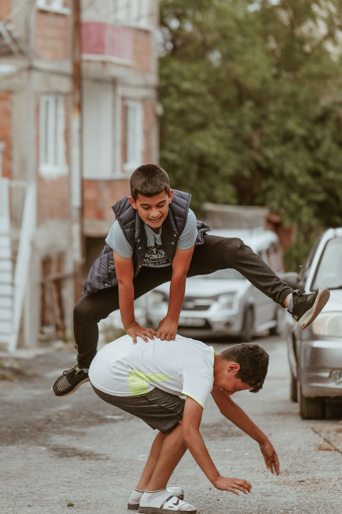
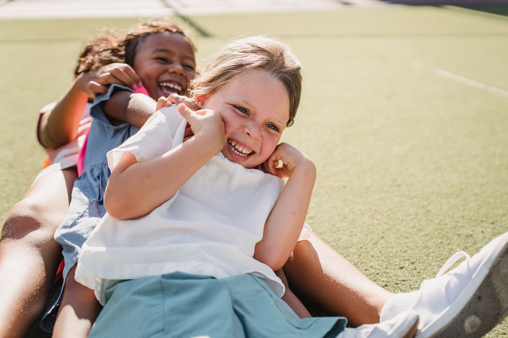
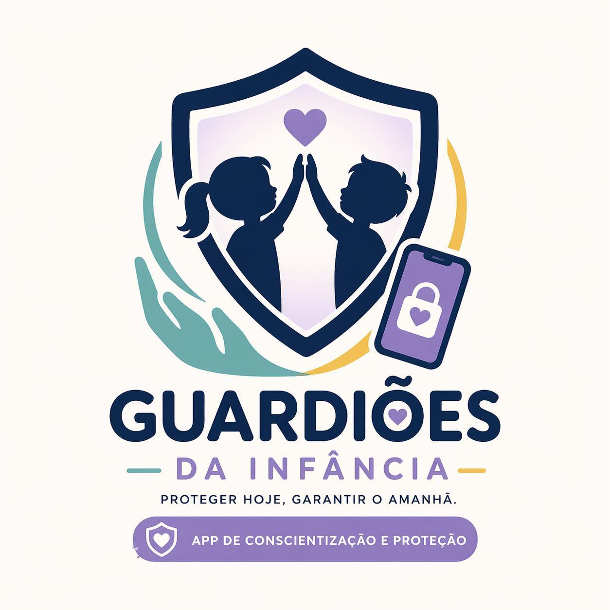

Proteger o tempo de ser criança é garantir um futuro saudável. Conheça nossa iniciativa contra a adultização precoce.
Crianças e adolescentes têm o direito de crescer, aprender e se desenvolver em um ambiente seguro, saudável e adequado à sua idade. A adultização pode fazer com que crianças e adolescentes sejam expostos precocemente a responsabilidades, comportamentos, padrões de beleza e situações que não correspondem à sua fase de desenvolvimento. Nosso objetivo é informar, conscientizar e orientar famílias, responsáveis e toda a comunidade sobre como identificar situações de risco, prevenir a adultização e oferecer o apoio necessário para que crianças e adolescentes possam viver cada etapa da infância e da adolescência com segurança e respeito.Aqui, você encontra informações, orientações e conteúdos educativos para aprender a proteger, saber como agir e fortalecer a rede de cuidado ao redor de crianças e adolescentes. Proteger é cuidar. Informar também é uma forma de proteção.
A adultização infantil acontece quando uma criança ou adolescente é exposto a comportamentos, responsabilidades, padrões ou situações que não são adequados para sua idade, fazendo com que seja tratado ou incentivado a agir como um adulto antes do momento apropriado. Ela pode aparecer de diferentes formas: na cobrança excessiva por aparência e comportamento, na exposição precoce a conteúdos inadequados, na responsabilidade por problemas de adultos ou até na pressão para assumir uma postura madura antes de estar preparado. Com o crescimento das redes sociais, esse problema também pode ocorrer por meio da exposição excessiva da imagem de crianças e adolescentes, da busca por padrões de beleza e da participação em conteúdos que incentivam comportamentos ou preocupações típicas da vida adulta. É importante lembrar: ensinar responsabilidade e autonomia não é o mesmo que adultizar. Crianças e adolescentes podem aprender, amadurecer e assumir pequenas responsabilidades de acordo com sua idade, sem perder o direito de brincar, aprender, se desenvolver e serem protegidos. Reconhecer a adultização é um passo importante para criar ambientes mais seguros e respeitar cada fase do desenvolvimento.




O projeto Guardiões da Infância nasceu a partir de uma iniciativa desenvolvida no SENAC, junto ao nosso
professor
de Matemática, Vinícius. A partir das discussões e pesquisas realizadas em sala, percebemos a importância de
falar
sobre um tema que está cada vez mais presente na sociedade: a adultização de crianças e adolescentes.
O projeto é desenvolvido por João Vitor, Isadora, Giullia, Joaquim e Yuri, que juntos trabalham na criação de
ideias, pesquisas e soluções para transformar informação em conscientização.